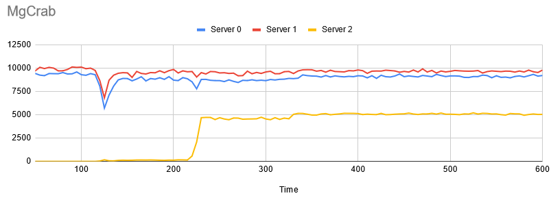
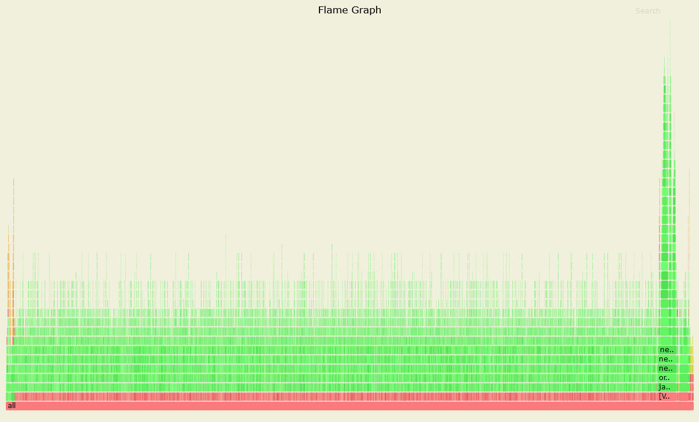
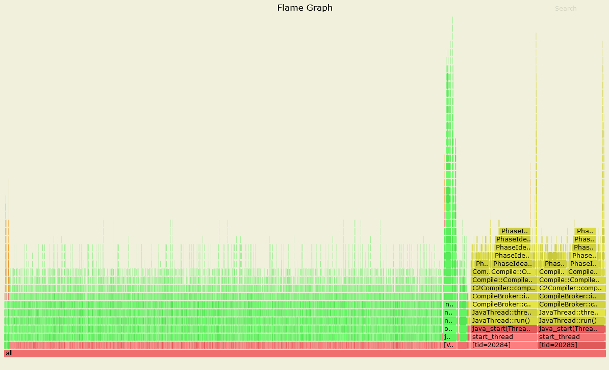
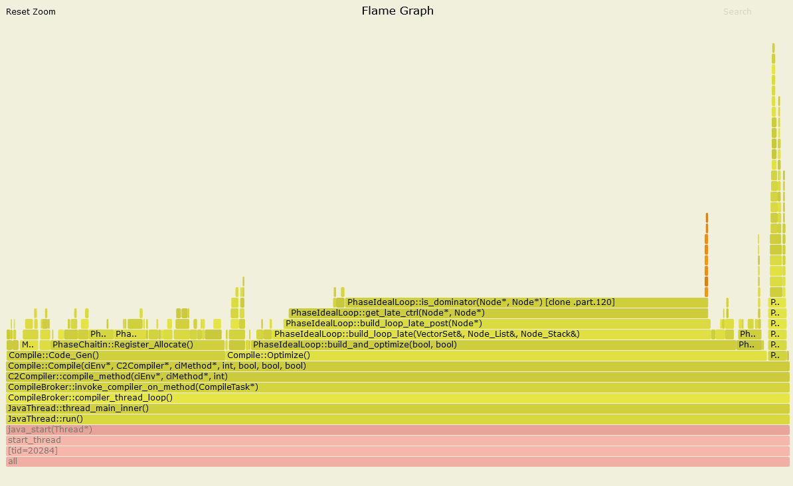
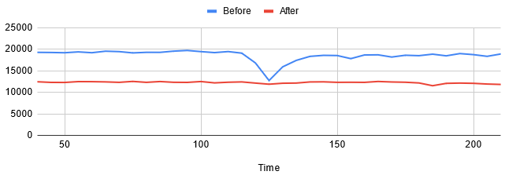
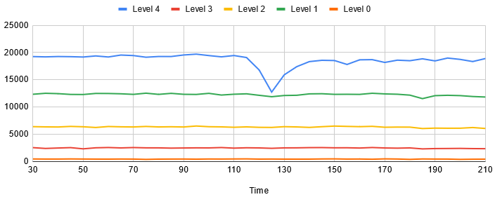

最近在使用實驗室開發的 ElaSQL 分散式資料庫系統 進行實驗時，發現系統效能在某個時間點會有突然下墜的情況。 因此這篇文章分享一下調查下墜原因的過程，以及可能的應對措施。
發現問題 最近正在整理之前 發表的論文 的程式碼，以提供其他研究團隊進行後續的研究。
該論文主要是研究如何在分散式的先決式資料庫系統 (Deterministic Database System) 上一邊搬移資料的同時避免去影響到系統效能。
實驗的時候有很多情境要測試。其中一個測試是啟動一個包含三台 server 的分散式資料庫系統，讓第一台 server 的負載超過它能處理的能力，第二台 server 則處理適量的負載，第三台機器則作為預備 server，一開始不包含任何資料，也不處理任何使用者請求。此時系統在發現第一台 server 負載過高時，就會下達一個指示將第一台 server 的部分資料搬移到第三台 server，並且讓第三台 server 加入處理使用者請求。實驗過程我們會記錄效能的變化，以觀察效能是否有受到資料搬遷的影響。
因此最近我在我們最新版的系統上面重現了這組實驗：

圖一、我們提出的方法 (MgCrab) 的實驗結果
圖的 X 軸代表時間軸，Y 軸代表每一台 server 每五秒處理的 transaction (Relational DBMS 處理請求的單位) 數量，資料搬遷發生在第 115 秒到 325 秒之間。
基本上結果看起來非常好，其中 Server 2 (第三台 server) 的效能飛起代表它具備足夠的資料開始處理使用者請求，而且效能也沒受到甚麼影響…
除了一個地方之外。
在第 115 ~ 125 秒之間，系統效能神秘地下墜了一下。這點是我們之前沒有觀察到的狀況，因此勾起了我的好奇。
各種碰壁 首先我考慮了一下系統在那個時間點是否出現了甚麼變化。第一個在我腦中顯現的就是系統在當時開始了資料搬遷的動作，然而這個下墜並沒有持續到資料搬遷結束，而只是在開始的前十秒下墜而已。顯然並不是資料搬遷本身造成的。
接著我思考了有甚麼東西會在資料搬遷的初始期才會存在。後來我想到可能是初始化資料搬遷的動作造成的影響。
為了要讓資料搬遷順利進行，在資料搬遷剛開始的瞬間，系統會進行一個準備作業。包括確定搬遷計畫的內容，要搬動的資料範圍等等。然而這些程式碼實際上並沒有太多工作要做，因此我對這項可能性感到懷疑。不過我暫時想不到其他可能性，所以還是先對該段程式碼進行計時 (這邊使用 java.lang.System.nanoTime() 進行)。
計時之後的結果令我感到訝異，該段準備工作竟然會耗費大概 5 ~ 30 ms 不等的時間。這段時間雖然看起來不多，但要知道對資料庫系統這種高效能系統來說其實是非常長的。我們系統其實處理一筆包含 10 個 SQL 的 transaction (假設資料都在同一台電腦上) ，從收到指令、解析、Query 優化、Index 搜尋、讀取資料表、序列化結果並回報使用者等等，也只要大概 5 ms 左右的時間而已。特別是該段程式碼又在系統一個重要的處理元件中，如果花太久時間鐵定會造成整體效能的下降。
為了找出確切是哪一段程式碼出拖慢效能，我進一步將該段程式碼分割成多份，並對每一段程式碼計時。然而結果卻令人失望。因為結果顯示每一段程式碼都分別花費差不多的時間。換句話說，沒有一個真正慢的地方，而是大家都很慢。
難道是垃圾回收 (GC)？ 中間我稍事休息一下，重新思考甚麼樣的動作可能會造成大家都變慢。後來得到一個結論，應該是 Java Virtual Machine (JVM) 搞得鬼。
JVM 是執行 Java 的必要程式，有時候它背後會做一些事情造成前景的程式變慢，這個時候就會造成大家都變慢的假象。我們的研究為了避免花太多時間在處理記憶體的問題，因此選擇了 Java 這種有 Garbage Collection (GC) 機制的語言作為開發語言。但是代價是效能會稍慢於 C/C++ 與 Rust 這種精確掌控記憶體的語言，而且背後有時候會因為 GC 而卡住。
為了確定是否是 GC 造成的問題，我在 JVM 啟動時加入了 -verbose:gc -Xloggc:gc.log -XX:+PrintGCTimeStamps -XX:+PrintGCDetails 的參數。這組參數可以讓 JVM 在每次 GC 的時候輸出一條 log 到 gc.log 檔案。因此如果有甚麼異狀就可以馬上知道。
我滿懷期待的心情，想說終於要抓到這個壞蛋了。打開了 gc.log 檔：
1 2 3 4 5 6 7 8 9 10 11 12 13 14 15 16 17 18 19 20 21 22 23 24 25 26 27 Java HotSpot(TM) 64-Bit Server VM (25.211-b12) for linux-amd64 JRE (1.8.0_211-b12), built on Apr 1 2019 20:39:34 by "java_re" with gcc 7.3.0 Memory: 4k page, physical 32675496k(16773680k free), swap 4079612k(3923452k free) CommandLine flags: -XX:InitialHeapSize=17179869184 -XX:MaxHeapSize=17179869184 -XX:+PrintGC -XX:+PrintGCDetails -XX:+PrintGCTimeStamps -XX:+UseCompressedClassPointers -XX:+UseCompressedOops -XX:+UseParallelGC ... (中略) ... 92.842: [GC (Allocation Failure) [PSYoungGen: 4040512K->1728K(4813824K)] 4535064K->496968K(15998976K), 0.0091350 secs] [Times: user=0.04 sys=0.00, real=0.01 secs] 94.758: [GC (Allocation Failure) [PSYoungGen: 4040384K->1728K(4843520K)] 4535624K->497728K(16028672K), 0.0092166 secs] [Times: user=0.03 sys=0.00, real=0.01 secs] 96.690: [GC (Allocation Failure) [PSYoungGen: 4080832K->1568K(4827648K)] 4576832K->498288K(16012800K), 0.0160904 secs] [Times: user=0.05 sys=0.00, real=0.02 secs] 98.667: [GC (Allocation Failure) [PSYoungGen: 4080672K->2560K(4888064K)] 4577392K->499976K(16073216K), 0.0099236 secs] [Times: user=0.04 sys=0.00, real=0.01 secs] 100.644: [GC (Allocation Failure) [PSYoungGen: 4162560K->1920K(4864000K)] 4659976K->501032K(16049152K), 0.0099665 secs] [Times: user=0.04 sys=0.00, real=0.01 secs] 102.635: [GC (Allocation Failure) [PSYoungGen: 4161920K->1728K(4942848K)] 4661032K->501552K(16128000K), 0.0094264 secs] [Times: user=0.03 sys=0.00, real=0.01 secs] 104.654: [GC (Allocation Failure) [PSYoungGen: 4267200K->1728K(4914688K)] 4767024K->502240K(16099840K), 0.0093296 secs] [Times: user=0.03 sys=0.00, real=0.01 secs] 106.668: [GC (Allocation Failure) [PSYoungGen: 4267200K->2144K(5001728K)] 4767712K->503368K(16186880K), 0.0094392 secs] [Times: user=0.03 sys=0.00, real=0.01 secs] 108.814: [GC (Allocation Failure) [PSYoungGen: 4383840K->1696K(4972032K)] 4885064K->503648K(16157184K), 0.0144723 secs] [Times: user=0.04 sys=0.00, real=0.01 secs] 110.894: [GC (Allocation Failure) [PSYoungGen: 4383392K->1664K(5061632K)] 4885344K->504400K(16246784K), 0.0094931 secs] [Times: user=0.03 sys=0.00, real=0.01 secs] 113.020: [GC (Allocation Failure) [PSYoungGen: 4503168K->1824K(5031936K)] 5005904K->505376K(16217088K), 0.0096430 secs] [Times: user=0.04 sys=0.00, real=0.01 secs] 115.163: [GC (Allocation Failure) [PSYoungGen: 4503328K->2400K(5120000K)] 5006880K->506728K(16305152K), 0.0096150 secs] [Times: user=0.04 sys=0.00, real=0.01 secs] 117.324: [GC (Allocation Failure) [PSYoungGen: 4621664K->2240K(5091328K)] 5125992K->507384K(16276480K), 0.0097563 secs] [Times: user=0.04 sys=0.00, real=0.01 secs] 119.544: [GC (Allocation Failure) [PSYoungGen: 4621504K->1920K(5175808K)] 5126648K->507864K(16360960K), 0.0096707 secs] [Times: user=0.03 sys=0.00, real=0.01 secs] 121.757: [GC (Allocation Failure) [PSYoungGen: 4733824K->1728K(5148160K)] 5239768K->508472K(16333312K), 0.0166801 secs] [Times: user=0.05 sys=0.00, real=0.02 secs] 124.013: [GC (Allocation Failure) [PSYoungGen: 4733632K->4160K(5227008K)] 5240376K->511728K(16412160K), 0.0110958 secs] [Times: user=0.04 sys=0.00, real=0.01 secs] 126.397: [GC (Allocation Failure) [PSYoungGen: 4841024K->1792K(5201920K)] 5348592K->512216K(16387072K), 0.0126207 secs] [Times: user=0.05 sys=0.00, real=0.01 secs] 128.720: [GC (Allocation Failure) [PSYoungGen: 4838656K->1664K(5273600K)] 5349080K->512952K(16458752K), 0.0099746 secs] [Times: user=0.04 sys=0.00, real=0.01 secs] 131.062: [GC (Allocation Failure) [PSYoungGen: 4934272K->2144K(5251072K)] 5445560K->514256K(16436224K), 0.0136200 secs] [Times: user=0.05 sys=0.00, real=0.01 secs] ... (下略)
…嗯，好像沒啥異狀
一般 JVM 的 GC 分成兩種。一種是效能幾乎沒有影響的 Young GC，也就是上面 log 中每一行顯示的資訊。另一種是會花費大量時間，並且卡住所有 thread 的 Full GC。因此我們這邊主要要找的是 Full GC 的字樣。不過 log 中沒有任何這樣的字樣出現，代表並沒有 Full GC 發生。
找到真正的問題來源 如果不是 GC 的話，就只能深入找找看到底程式的 Hot Spot 在哪裡。稍早用計時的方式就是一種尋找方式，但是只能針對某個特定的程式碼去找。如果問題並不在明顯的地方的話，就需要大範圍地去找。
這邊我使用 GitHub 上找到的一個很好用的程式：async-profiler 。這個程式能夠利用著名的效能分析工具 perf 來對 Java 的程式進行 profile，並且將蒐集的 profile 資訊統整起來，依照想要的形式匯出。我最喜歡的功能就是把 profile 匯出成 SVG 的互動式圖片來檢視。這個工具曾經幫我找到了很多難解的問題。
這邊我使用 async-profiler 來分別針對剛開始進行資料搬遷的時段與進行了一陣子的時段進行 profile。理論上程式在後面的時段應該是正常的，所以可以作為一個參考點。
蒐集結果如下：

圖二、效能正常時的 Profile

圖三、效能異常時的 Profile
上面兩張圖顯示的是每一個 thread 呼叫每一個 method 的頻率，並且以 call stack 的方式顯示。非常地淺顯易懂。(有另一個模式是可以將各個 thread 的結果合併起來觀察，這邊就看各自的需求設定。)
可以看到效能異常的時候有一個區塊明顯地大很多，代表那些 method 的動作耗費了大量的時間。於是我們將這個區域放大 (這也是為什麼我喜歡用這個 profiler)：

圖四、效能異常時的 Profile (放大黃色區塊)
可以看到裡面有些關鍵字：CompileBroker、C2Compiler、Compiler::Optimize()。
我起初看到這些字以為是 class loader 在讀取程式碼，但針對這些關鍵字搜尋了之後才發現不是。原來這代表的是 just-in-time (JIT) compilation。這篇 Stackoverflow 的解答有稍微解釋 JVM 的 JIT 的運作機制。簡單來說，就是 JVM 觀察了程式碼的使用狀況之後，就會視情況對 Java 的程式進行優化，包括重構程式碼與編譯成機器碼等等。而我們在圖四所觀察到的現象，就是 JVM 在進行 JIT 優化。
但是為什麼是在資料搬遷的開始做呢？
我進一步根據 這篇文章 的指示在 JVM 上加上 -XX:+UnlockDiagnosticVMOptions -XX:+LogCompilation的參數，讓 JVM 在每次進行 JIT 優化的時候都會將動作輸出到一個 log 檔。
我擷取其中一段：
1 2 3 4 5 6 7 8 9 10 11 12 13 14 15 <task_queued compile_id='4063' compile_kind='osr' method='org/elasql/migration/mgcrab/MgCrabMigrationMgr checkSourceNode (Lorg/elasql/sql/PrimaryKey;)I' bytes='71' count='16765' backedge_count='16765' iicount='16765' osr_bci='13' level='3' stamp='188.930' comment='tiered' hot_count='16765'/> <task_queued compile_id='4064' compile_kind='osr' method='org/elasql/migration/mgcrab/MgCrabMigrationMgr checkDestNode (Lorg/elasql/sql/PrimaryKey;)I' bytes='71' count='16765' backedge_count='16765' iicount='16765' osr_bci='13' level='3' stamp='188.930' comment='tiered' hot_count='16765'/> <nmethod compile_id='4063' compile_kind='osr' compiler='C1' level='3' entry='0x00007fb350e34dc0' size='8520' address='0x00007fb350e34b10' relocation_offset='296' insts_offset='688' stub_offset='5456' scopes_data_offset='5896' scopes_pcs_offset='7696' dependencies_offset='8432' nul_chk_table_offset='8448' oops_offset='5768' method='org/elasql/migration/mgcrab/MgCrabMigrationMgr checkSourceNode (Lorg/elasql/sql/PrimaryKey;)I' bytes='71' count='17033' backedge_count='17033' iicount='17033' stamp='188.931'/> <nmethod compile_id='4064' compile_kind='osr' compiler='C1' level='3' entry='0x00007fb350edfb00' size='8520' address='0x00007fb350edf850' relocation_offset='296' insts_offset='688' stub_offset='5456' scopes_data_offset='5896' scopes_pcs_offset='7696' dependencies_offset='8432' nul_chk_table_offset='8448' oops_offset='5768' method='org/elasql/migration/mgcrab/MgCrabMigrationMgr checkDestNode (Lorg/elasql/sql/PrimaryKey;)I' bytes='71' count='17033' backedge_count='17033' iicount='17033' stamp='188.932'/> <task_queued compile_id='4065' method='org/elasql/cache/calvin/CalvinCacheMgr flush ()V' bytes='110' count='12584' backedge_count='173953' iicount='12584' decompiles='1' stamp='189.122' comment='tiered' hot_count='12584'/> <task_queued compile_id='4066' method='org/elasql/schedule/calvin/mgcrab/CrabbingAnalyzer updateMigrationStatus ()V' bytes='43' count='14336' backedge_count='18551' iicount='14336' level='3' stamp='189.233' comment='tiered' hot_count='14336'/> <nmethod compile_id='4066' compiler='C1' level='3' entry='0x00007fb350ee2820' size='2416' address='0x00007fb350ee2650' relocation_offset='296' insts_offset='464' stub_offset='1712' scopes_data_offset='1976' scopes_pcs_offset='2152' dependencies_offset='2376' nul_chk_table_offset='2384' oops_offset='1928' method='org/elasql/schedule/calvin/mgcrab/CrabbingAnalyzer updateMigrationStatus ()V' bytes='43' count='14338' backedge_count='18554' iicount='14338' stamp='189.233'/> <task_queued compile_id='4067' method='org/elasql/migration/mgcrab/MgCrabMigrationMgr checkSourceNode (Lorg/elasql/sql/PrimaryKey;)I' bytes='71' count='18813' backedge_count='18812' iicount='18813' level='3' stamp='189.484' comment='tiered' hot_count='18813'/> <task_queued compile_id='4068' method='org/elasql/migration/mgcrab/MgCrabMigrationMgr checkDestNode (Lorg/elasql/sql/PrimaryKey;)I' bytes='71' count='18813' backedge_count='18812' iicount='18813' level='3' stamp='189.484' comment='tiered' hot_count='18813'/> <nmethod compile_id='4067' compiler='C1' level='3' entry='0x00007fb35108c4c0' size='8352' address='0x00007fb35108c210' relocation_offset='296' insts_offset='688' stub_offset='5328' scopes_data_offset='5768' scopes_pcs_offset='7552' dependencies_offset='8272' nul_chk_table_offset='8288' oops_offset='5640' method='org/elasql/migration/mgcrab/MgCrabMigrationMgr checkSourceNode (Lorg/elasql/sql/PrimaryKey;)I' bytes='71' count='19084' backedge_count='19084' iicount='19084' stamp='189.485'/> <nmethod compile_id='4068' compiler='C1' level='3' entry='0x00007fb3514eac80' size='8352' address='0x00007fb3514ea9d0' relocation_offset='296' insts_offset='688' stub_offset='5328' scopes_data_offset='5768' scopes_pcs_offset='7552' dependencies_offset='8272' nul_chk_table_offset='8288' oops_offset='5640' method='org/elasql/migration/mgcrab/MgCrabMigrationMgr checkDestNode (Lorg/elasql/sql/PrimaryKey;)I' bytes='71' count='19084' backedge_count='19084' iicount='19084' stamp='189.486'/> <nmethod compile_id='4047' compile_kind='osr' compiler='C2' level='4' entry='0x00007fb3519527c0' size='124544' address='0x00007fb351951890' relocation_offset='296' consts_offset='3856' insts_offset='3888' stub_offset='57328' scopes_data_offset='58456' scopes_pcs_offset='113840' dependencies_offset='121376' handler_table_offset='121424' nul_chk_table_offset='122744' oops_offset='58000' method='org/elasql/bench/server/procedure/calvin/tpcc/NewOrderProc executeSql (Ljava/util/Map;)V' bytes='1186' count='8134' backedge_count='89191' iicount='8134' decompiles='1' stamp='189.895'/> <task_queued compile_id='4069' method='org/elasql/bench/server/procedure/calvin/tpcc/NewOrderProc executeSql (Ljava/util/Map;)V' bytes='1186' count='8151' backedge_count='89367' iicount='8151' decompiles='1' stamp='189.912' comment='tiered' hot_count='8151'/> <nmethod compile_id='4005' compile_kind='osr' compiler='C2' level='4' entry='0x00007fb351939480' size='39928' address='0x00007fb351938f90' relocation_offset='296' insts_offset='1264' stub_offset='17968' scopes_data_offset='18416' scopes_pcs_offset='35904' dependencies_offset='38768' handler_table_offset='38808' nul_chk_table_offset='39312' oops_offset='18048' method='org/elasql/storage/tx/concurrency/ConservativeOrderedCcMgr bookReadKeys (Ljava/util/Collection;)V' bytes='80' count='27968' backedge_count='200693' iicount='27968' decompiles='1' stamp='190.118'/> <nmethod compile_id='4035' compile_kind='osr' compiler='C2' level='4' entry='0x00007fb3513c45c0' size='114552' address='0x00007fb3513c3150' relocation_offset='296' insts_offset='5232' stub_offset='67120' scopes_data_offset='68280' scopes_pcs_offset='105400' dependencies_offset='111416' handler_table_offset='111456' nul_chk_table_offset='113520' oops_offset='67656' method='org/elasql/bench/server/procedure/calvin/tpcc/NewOrderProc prepareKeys (Lorg/elasql/schedule/calvin/ReadWriteSetAnalyzer;)V' bytes='682' count='14703' backedge_count='161383' iicount='14703' decompiles='1' stamp='190.153'/>
后里蟹… 它到底優化了多少 method 啊…
從 compile_id 這項資訊可以看的出來少說有 4068 以上的 method 被進行了 JIT 優化。而且優化主要發生在兩個時間點。第一個是程式剛啟動的時候，這點很合理。另一個就是資料搬遷開始的時候。
從它優化的 method 名稱來看，可以推斷出原因應該是因為當資料搬遷開始之後，一堆不常被呼叫的 method 突然被大量呼叫。因此觸發了 JVM 的 JIT 優化機制。
不過至少是找到問題的源頭了。
解決辦法 這樣就有幾個解決辦法：
想辦法讓程式在開始資料搬遷之前就觸發 JIT 機制，避免在蒐集實驗數據時發生
關閉 JIT 功能
放置不管
法一應該是最合理的作法，這樣就能保有 JIT 的好處，同時也可以避免實驗數據受到 JIT 影響。然而實際上要進行法一需要根據程式的設計來判斷最適當的做法。例如以我們的狀況來說可能就要進行兩次資料搬遷，讓第一次作為暖身，第二次再開始蒐集實驗數據。不過因為我們系統是一個分散式系統的架構，其內部運作又非常複雜，一旦搬出去的東西就很難搬回來。雖然不是辦不到，但要完成的複雜度太高。
不過如果這篇文章的讀者手上的程式相對沒那麼複雜的話，法一應該是最合理的作法。
因此接下來只能試試看法二。根據 這篇文章 的分享，可以透過在 JVM 啟動時設定 -XX:TieredStopAtLevel=n 這個參數來決定要將 JIT 執行到甚麼程度。預設是執行到最高的 Level 4 的程度。
我首先測試將 JIT 設定為 Level 1 是否有效 (即設定 -XX:TieredStopAtLevel=1)：

圖五、預設設定與 Level 1 設定在 Throughput 總合的比較，為了方便比較，我把三個 server 的產出合併為一條線。這個圖沒有跑到資料搬遷結束
…嗯，確實是沒有下墜了，但效能整體也變低不少。
我好奇不同的設定下的效能差異會差到多少，所以嘗試了 Level 0 ~ 4：

圖六、比較使用不同的 JIT Level 對 MgCrab 實驗的效能影響
真詭異，Level 1 竟然是第二高的辦法。雖然我不是很懂 JIT 的邏輯，但是顯然 Level 不是設定越高越好。而且 Level 4 雖然中間會跌下去一下，但這個代價顯然是值得的。
在知道了不同 Level 帶來的影響之後，最後就是要根據展示這個實驗的需求選擇最適合的設定。因為我們的實驗要展現的是極致的效能，因此我們最後應該是會選擇保留 JIT Level 4 的設定。並且需要的時候加註說明表示短暫的下跌是由於 JIT 造成的現象。
至於為什麼之前論文發表時沒有觀察到這個現象呢？比較一下之前的實驗結果發現：因為當時系統的效能還不算太好，很有可能是當時程式優化不足，讓機器的 CPU 使用率並沒有滿載。因此受到 JIT 影響的程度並不劇烈。雖然當時可能也發生了相同問題，但是在 CPU 沒有完全滿載的情況下問題就不太顯著。
所以我最後決定放置不管，將之視為合理的代價。
結案。